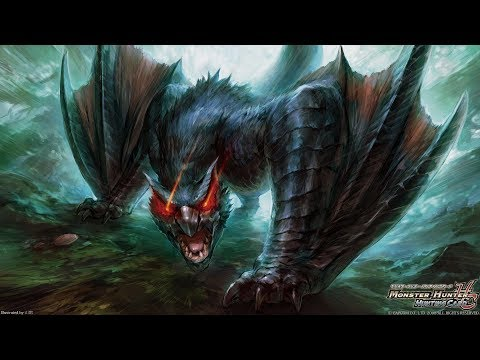

首頁
迅龍
雷狼龍
電龍
迅龍

納魯加庫魯加
飛龍種
別名 迅龍
迅龍是飛龍種怪物裡少數經過特異性進化的怪物，棲身森林的習性讓其飛行能力退化
作為交換，進化出了強大的跳躍能力和攀爬能力，能在樹冠間輕鬆穿行
甚至能在掉入陷坑的瞬間跳出。
迅龍是晝伏夜出的獵手，入夜後其黑色的體毛與夜色融為一體
只有當它憤怒時，雙眼閃爍紅光才會暴露其位置 。
柔軟的體毛和厚實的腳掌肉墊讓迅龍的每次跳躍都悄然無聲。
而迅龍本身的視覺與聽覺又異常靈敏。它會藉助樹叢遮蔽，等待大意的獵物經過
然後突然竄出用刃翼或尾巴襲擊，獵物往往沒等覺察就身首異處 。
如此本領讓迅龍能夠獵食其它掠食者難以捕捉的羚鹿；獵食羚鹿之類的小型獵物可節省時間
還能避免與其它掠食者發生衝突；迅龍通常選擇在粗壯的樹上休息
不過睡眠從來不深，稍有風吹草動就會被驚醒。
納魯加庫魯加稀少種
飛龍種(龍盤目 龍腳亞目(不明) 前翼腳龍上科 納魯加科)
別名 月迅龍
生態
某些地區有詳細傳承其存在的 迅龍(納魯加庫魯加)的特殊亞種
雖然到近年為止都沒有出現過其存在 但在某次獵人公會在フォンロン的古塔調查時
在那邊弄到晚上的時候 終於正式的發現了
因發著月白色光輝的美麗體毛包裹著全身 被稱為「月迅龍」
體格與比起通常種與亞種有著兩倍大 性格極度兇猛 而且是完全的夜行性
有著通常種與亞種沒有的特徵 有著消失身影的驚人能力
被稱為「隱身」的這個能力 是因為月光被體毛折射的原因
因為這樣 能做到在利用晚上的霧氣把自己的身體給混入
迅龍種特有的驚人速度與機動力當然也持有
即使是熟練的獵人 要在視線內捕捉牠的動作是極度困難的
在其特性上 能最大限度發揮能力的 只有限定在「有霧的晚上」
但是 現在除了在有這些條件的日子外 幾乎沒有確認過迅龍稀少種活動過的姿態
在面對外敵時 有時會激烈的甩動尾巴 利用切割風的聲音來威嚇
這個行動不只是單單威嚇 也做著能隨時能射出尾棘的準備
下次尾巴在大幅度甩出的攻擊的同時 大量尾棘也會跟著撒出
另外 月迅龍的尾棘有含著出血性的毒素 即使只被打中一次也非常危險
這個攻防一體的攻擊手段與前述所說的隱身能力結合
迅龍稀少種即使是面對複數的外敵為對手也能全部擊倒 有著誇張的戰鬥力
迅龍種對攻擊以「閃避」的方向而進化 因此通常種 亞種防禦力基本不太高
但是 在這個稀少種的場合下體表也相當硬
特別是頭部或背後 以生疏的攻擊想對其造成傷害是相當困難的
另一方面 尾巴富含著柔軟性與伸縮性 能更快 更加強力的甩動
體力與持久力也非常的高 想狩獵的話是個有相當程度的強敵
只有一小部分有相當戰績的獵人才會被允許狩獵
白疾風
納魯加庫魯加
飛龍種(龍盤目 龍腳亞目(不明) 前翼腳龍上科 納魯加科)
別名 白疾風迅龍
生態
從以前到現在的個體之中 有著很明顯不一樣的外表與能力的迅龍(納魯加庫魯加)
比起通常種有著大一倍的軀體 其全身到處都有白色紋樣的外表為特徵
因為會聯想到一把會動的刀刃姿態 更加敏捷的身軀 然後後述所說的特殊攻擊技能
獵人公會已≪白疾風≫作為二名稱呼
在一部分有被稱呼為「斬風的白影」的異名
要是不經意的踏入其地盤 其影子會瞬間讓踏入的生物頭部落地
本來的通常種就有壓倒性自豪的運動能力 利用跳躍的瞬間捕獲獵物
但是比起機動力更加大的威脅是 更加堅硬且發達的尾巴
白疾風迅龍足以與綠迅龍與月迅龍匹敵 又或是更加厲害的操控尾巴
不單單只是橫掃或是敲擊 連續攻擊或是假動作也能使用
此外 迅龍種的尾巴全部都有被稱為「尾棘」的棘狀鱗片覆蓋
本來會為了移動 為了不礙事而會把尾棘疊在一起收起
白疾風平常基本上都會抱持著立起的狀態 不管任何阻礙都能迅速的移動
此外 已知迅龍會利用離心力來把尾棘射出來做遠距離攻擊
白疾風會把這個往上空射出 在落下的時候利用死角的時間差來做攻擊
然後與通常個體比起來有著決定性的差距 這也是白疾風的外號來源之一
會利用其氣勢甩動尾巴 同時發生被稱作是「真空波」的風之刃
其一閃會把岩石切斷 水會分裂 天空會分開的恐怖
這個是用來切斷遠處獵物的武器
要是被這個真空波捲入的話 有如被銳利的刀刃所切到一樣 造成深且複雜的裂傷
就算沒有造成致命傷 也會有一段時間持續著不斷出血與激烈疼痛的折磨
比起通常種還要更加超過的壓倒性戰鬥力 獵人公會對於這個個體有特別的措施
要是沒有得到特殊許可的話 公會是不會允許狩獵的
此外 這個可能光是移動就能切斷風的白色鱗片與體毛 與通常種比起來有著不一樣的特性
其素材所做出的武器防聚會寄宿著白疾風的靈魂 隱藏著特殊的力量